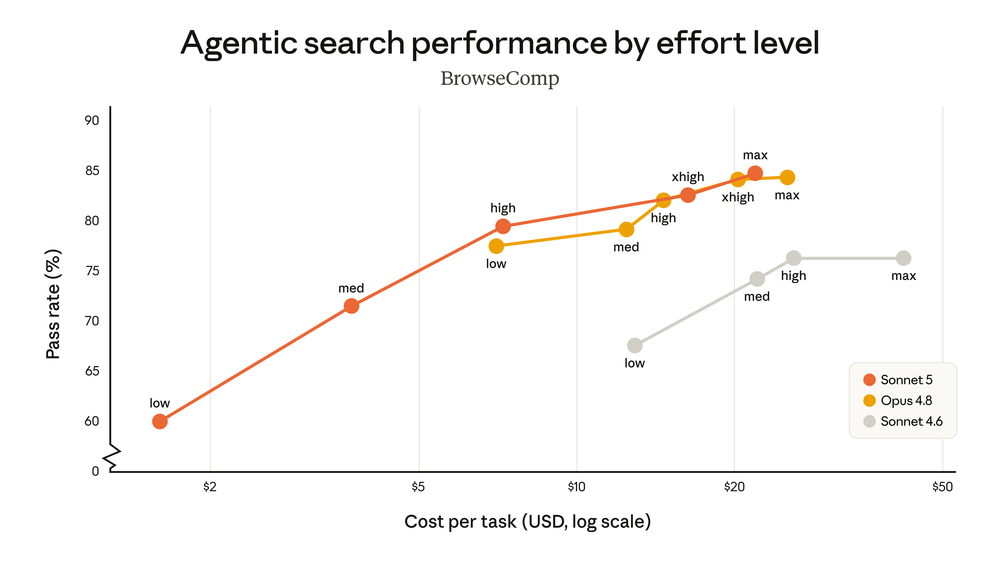
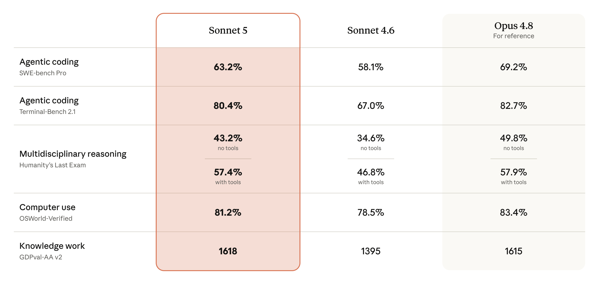

一、导语
2026 年 6 月 30 日，Anthropic 正式发布了 Claude Sonnet 5，这是其 Sonnet 系列迄今为止最具 Agent 能力的新一代模型。Anthropic 称其为「最具智能体精神的 Sonnet」——它能够制定计划、使用浏览器和终端等工具，并以只需数月前需要更大、更昂贵模型才能达到的水平自主运行。
更令人瞩目的是其定价策略：首发期间（截至 2026 年 8 月 31 日）每百万输入 Token 仅 2 美元、每百万输出 Token 10 美元，正式定价为 3 美元/15 美元（输入/输出）。在性能接近 Opus 4.8 的前提下，这一价格使 Sonnet 5 成为目前 Agent 能力性价比最高的模型之一。
二、背景分析：Sonnet 系列的进化之路
Claude Sonnet 系列自 2024 年 的 Sonnet 3.5 起，就一直扮演着 Anthropic「黄金中端」的角色。Sonnet 3.5、3.6 和 3.7 曾是最早展现出卓越编程和工具使用能力的模型之一，让 AI Agent 真正从概念验证走向了实际开发工作流。
然而，近几个季度以来，Agent 能力最显著的提升主要集中在 Opus 系列模型上（Opus 4.7、4.8）。Sonnet 系列的进步相对放缓，与 Opus 之间的「Agent 能力鸿沟」逐渐扩大。此次 Sonnet 5 的发布，正是为了缩小这一差距——其性能接近 Opus 4.8，但在定价上大幅降低，实现了「Opus 级别的 Agent 能力，Sonnet 级别的价格」。

三、核心内容：技术突破与基准测试
Sonnet 5 在多个关键维度上实现了质的飞跃。根据 Anthropic 官方发布的系统卡和基准测试数据：
Agent 智能体能力
在 BrowseComp（Agent 搜索评测）和 OSWorld-Verified（计算机使用评测）两大前沿基准中，Sonnet 5 的橙色曲线（不同 effort 水平）全面超越 Sonnet 4.6 的灰色曲线。更重要的是，在较高 effort 水平下，Sonnet 5 的性能可与 Opus 4.8 匹敌，覆盖了更广泛的价格-性能选择范围。

编程能力
Sonnet 5 在编程领域的提升尤为显著。其在 SWE-bench Verified 上的得分较 Sonnet 4.6 提升了近 20 个百分点，在 HumanEval+（Python 代码生成）上接近满分。对于日常开发工作流中的代码生成、重构、Debug 和代码审查，Sonnet 5 的表现已可媲美专为编程优化的模型。
安全评估
Anthropic 的安全评估显示，Sonnet 5 的不良行为发生率整体低于 Sonnet 4.6，在 Agent 场景中使用更为安全。值得注意的是，评估还显示其网络安全任务能力远低于当前的 Opus 模型，这说明 Anthropic 在性能提升与安全控制之间找到了精心设计的平衡点。
价格与可用性
- 首发价（至 2026 年 8 月 31 日）：$2/M 输入 Token，$10/M 输出 Token
- 正式价（2026 年 9 月 1 日起）：$3/M 输入 Token，$15/M 输出 Token
- API 模型 ID：
claude-sonnet-5 - 可用范围：Free/Pro/Max/Team/Enterprise 所有套餐（Free 和 Pro 套餐默认模型）
- 同步上线：Claude Code、Claude API、Claude Platform
四、各方反应
Sonnet 5 发布后，AI 社区和开发者群体反应热烈。
「Sonnet 5 在 agentic 能力上的提升令人印象深刻。它在中等 effort 水平下的性价比非常突出——对于大多数生产级 Agent 应用来说，这是目前最经济实用的模型选择。」
开发者社区：在 Hacker News 和 Reddit 上，开发者们普遍认为 Sonnet 5 的定价策略极具竞争力。一位资深开发者评论称：「Opus 级别的 Agent 能力只要 Sonnet 的价格，Anthropic 这是在给 OpenAI 施压。」
竞争对手分析：GPT-5.6 Sol 次快模型（GPT-5.6-turbo）的定价约为 $4/M 输入 Token，Sonnet 5 的 $2/$3 定价形成了显著价格优势。在 SWE-bench 等编程基准上，Sonnet 5 的得分已与 GPT-5.6-turbo 接近，但价格低约 50%。
企业用户：多家 SaaS 公司和 AI 创业公司表示将立即迁移到 Sonnet 5，特别是那些需要大规模 Agent 工作负载的场景——如自动化代码审查、客户服务 Agent、数据分析流水线等——其中成本是关键制约因素。
五、深度解读：Sonnet 5 意味着什么？
Agent 经济学的拐点
Sonnet 5 的最重要意义不在于其绝对性能，而在于它打破了 Agent 能力的「价效比天花板」。在此之前，真正可靠的 Agent 级智能（Opus 4.8 级别）意味着高昂的 API 调用成本，这使得很多 Agent 应用在大规模部署时面临经济可行性挑战。Sonnet 5 将这一门槛降低了约 40-50%，使得更多应用场景变得经济可行。
考虑到许多 AI Agent 需要在单个任务中发起数十甚至上百次 API 调用（多步推理、工具调用、环境交互），每次调用的成本节省都会被显著放大。以一个典型的编码 Agent 工作流为例：一次代码审查 + 测试生成 + 修改迭代可能需要 10-20 次 模型调用，使用 Sonnet 5 vs Opus 4.8 可节省 50-80 美元/千任务。
Sonnet vs Opus 的分层策略
随着 Sonnet 5 性能逼近 Opus 4.8，Anthropic 的产品组合策略开始变得更加清晰：Sonnet 系列覆盖「高性价比 Agent 能力」的大规模生产场景，而 Opus 系列则聚焦在需要绝对最高性能的「天花板场景」（如科研推理、复杂数学证明、高精度代码生成）。用户可以在同一应用中根据任务复杂度动态切换模型——简单任务用 Sonnet 5，困难任务用 Opus 4.8，实现成本和质量的 Pareto 最优。
「Sonnet 5 使开发者可以自由选择 effort 水平来匹配任务复杂度，从低成本的快速应答到 Opus 级别的深度推理，Sonnet 5 覆盖了比以往更宽的性价比区间。」
对 AI 行业格局的影响
Sonnet 5 的发布加剧了 AI 模型的价格战。在 OpenAI 预览 GPT-5.6 Sol 之后仅数天，Anthropic 就以更低的价格推出了性能对标的产品级模型。这表明头部 AI 公司正从「模型能力竞赛」向「能力-成本综合竞赛」转变——谁能以更低的成本提供同等或更好的 Agent 能力，谁就能赢得开发者生态和企业客户。
六、总结
Claude Sonnet 5 不仅是一次模型迭代，更是 AI Agent 走向规模化的关键里程碑。它以 Opus 级别的 Agent 能力和 Sonnet 级别的价格，将生产级 AI Agent 的经济门槛大幅降低。对于开发者、企业和整个 AI 生态系统来说，一个好模型的真正价值在于多少人能用得起——从这个角度看，Sonnet 5 可能是 2026 年 最重要的模型发布之一。